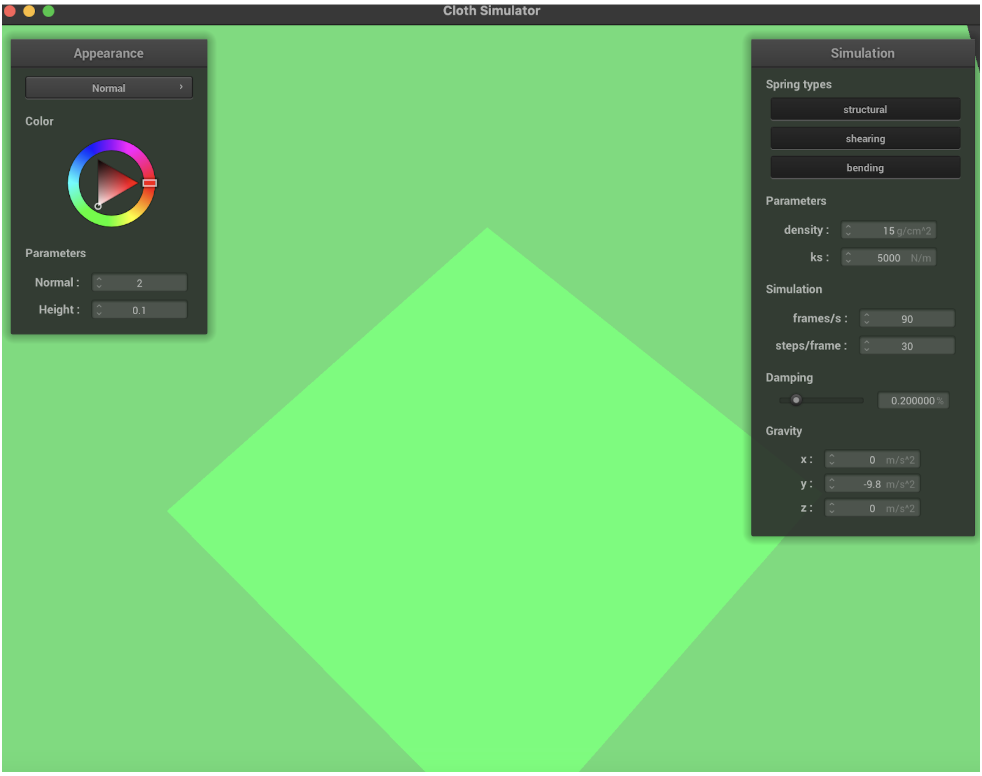
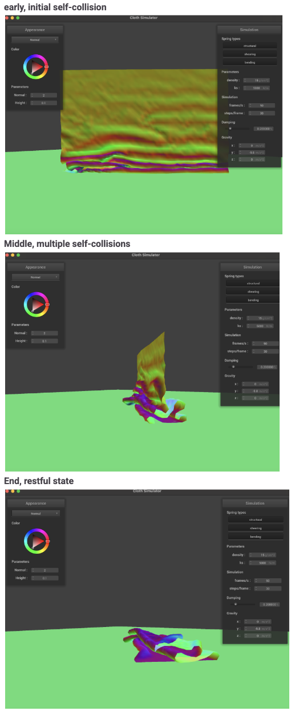
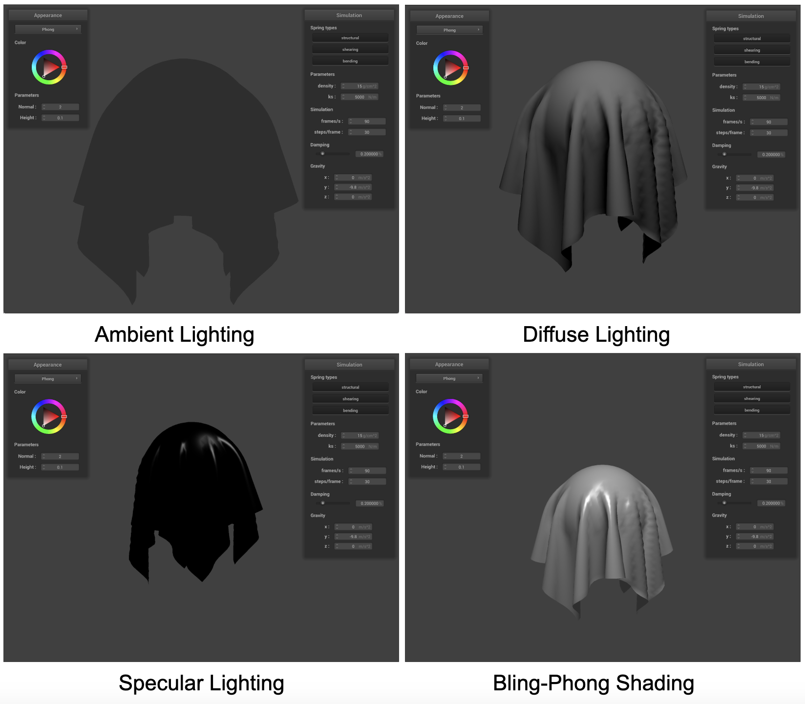
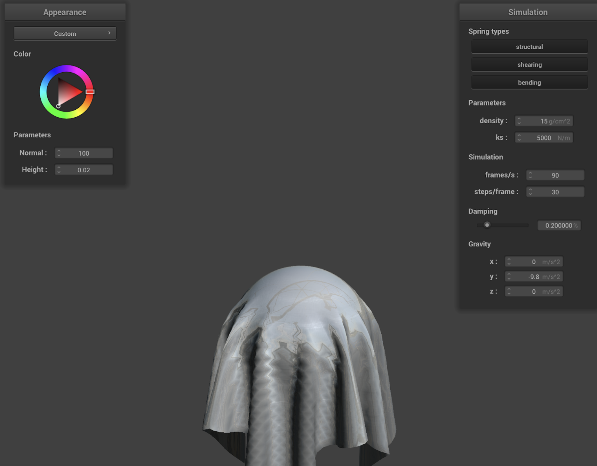
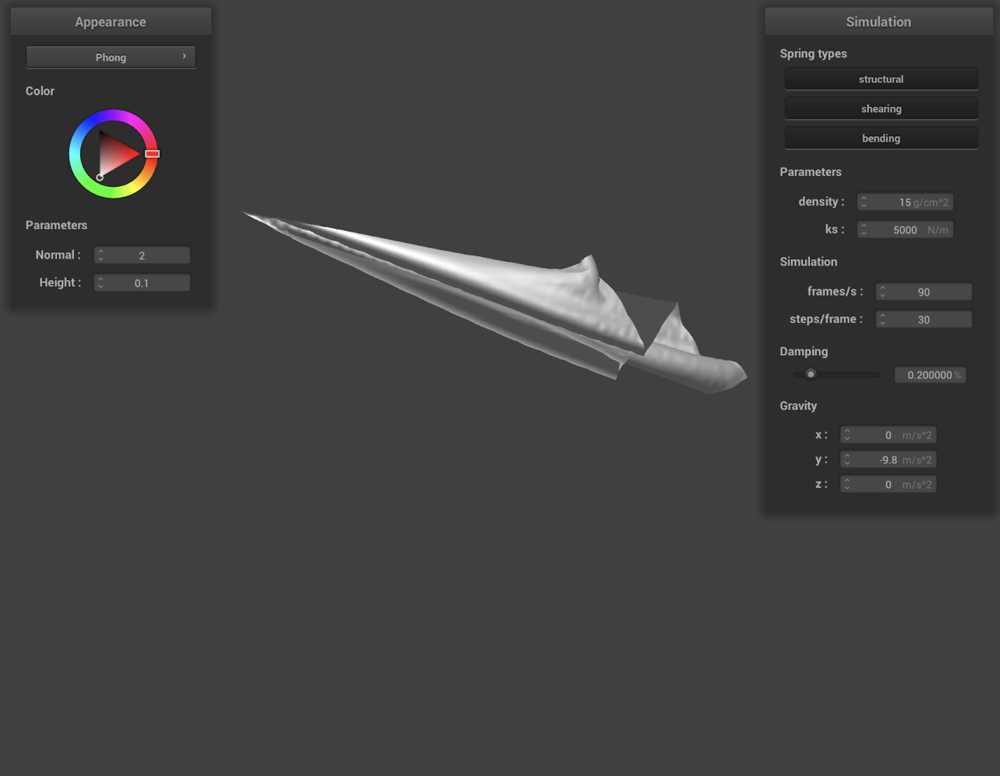
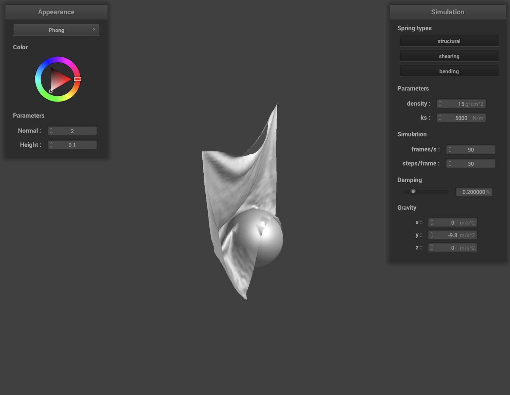
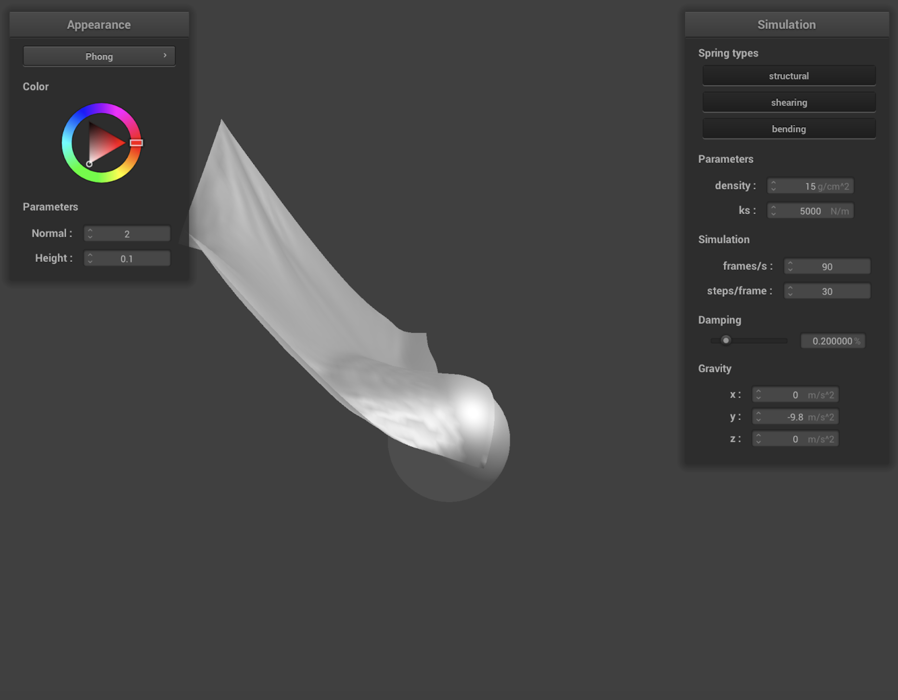

Group Members: Sanika Girish Bharvirkar, Dhanin Wongpanich
Dhanin Writeup Website: https://cal-cs184-student.github.io/hw-webpages-cs184website/hw4/index.html
Sanika Writeup Website: https://cal-cs184-student.github.io/hw-webpages-pookie/hw4/index.html
Github Link: https://github.com/cal-cs184-student/sp25-hw4-og-crashouts
This project was very fun for us to implement because it was cool to watch the simulations run. Sanika found it to be the most similar to video games for example. Simulations seemed very unapproachable and seemed like it required lots of computations before we had the chance to work on this homework, and actually seeing all the parts through was very rewarding. We feel like we have a more intuitive understanding of how 3D simulations we see every day such as in TV shows and video games work. Although this homework was not as algorithm heavy as Homework 3 for example, it felt like it touched more on general software engineering and actually translating intended behavior into code. Dhanin found it really cool how we were able to use shaders to speed up rendering and thought it was interesting to learn how to compile programs for the gpu.
At this point, both of us have become a lot more comfortable with using ChatGPT. For Part 1, we weren't aware of how to start coding. We asked GPT to give us some skeleton code to help us implement Cloth::buildGrid() and Cloth::simulate(), and further prompted it when we had confusion. Aside from learning more technical/coding competency for C++, and things such as how to structure logic like order of for loops for easier debugging, we learnt that for every x and y coordinate and corresponding point mass, we should add structural, shearing and bending springs if needed. To be more specific, we shouldn't just stop once the condition for adding a structural spring is true, and move onto the next point mass. We should also check if adding shearing and bending springs is necessary as well. For Part 2, we implemented the code on our own, then used Chat GPT to debug. We found that we should be adding all the forces to a point mass, which differed from our interpreted understanding that each value in external_accelerations corresponded to another value in point_masses (we were initially doing pm.forces[i] = mass * external_accelerations[i]). Similarly, for “constrain the changes to be such that the spring does not change in length more than 10% per timestep", we learnt that we need change the offset direction depending on which point mass was pinned. This was a common theme throughout this homework: when we encountered unexpected bugs, we would prompt GPT to go through our logic and see if there were any problems with intended behavior. For Part 5, we were actually able to upload a picture of the reference image in the spec and ask it to correct our constants so that it matched better instead of using trial and error until our constants produced images similar to the spec. Co-pilot was also enabled to help debugging, especially with referencing/dereferencing pointers. Intuitively, it makes sense but it also brings up the question of overreliance/dependency on AI for code fluency.
Take some screenshots of scene_pinned2.json from a viewing angle where you can clearly see the cloth wireframe to show the structure of your point masses and springs.
Cloth wireframe with all spring constraints enabled.
Cloth wireframe with only shearing constraints enabled.
Cloth wireframe without shearing constraints (structural and bending only).
scene/pinned4.json in its final resting state:
Final resting state for scene/pinned4.json.
Comparison showing the effect of varying spring constant (ks).
With a very low ks, the cloth lacks stiffness and isn't well supported. It settles into its resting state with little resistance, resulting in the formation of multiple small folds or ridges. Conversely, with a very high ks, the cloth is much stiffer and barely falls overall. Only the unsupported edge falls towards its resting position. The upper edge remains strongly supported by the pinned point masses. This structure causes the cloth to form a singular, large arch connecting to the pinned points. We can also observe that any self-folding occurs with a much wider radius compared to the high-frequency ridges seen with the low ks.
Explanation: We found that increasing the spring constant results in a stiffer cloth. This behavior is especially apparent when watching the cloth from start to finish. The cloth falls very stiffly at ks = 50000 compared to the default, while the cloth with ks = 10 falls more fluidly. The stiff cloth falls as if it was a board, while the fluid cloth at ks = 10 is much more sensitive to gravity and stretches and bends easily. The behavior is interesting given that g = -9.8 for all simulations. The ks constant changes how the internal spring forces resist changes in distance between connected parts, so it makes sense that the higher the ks, the stronger the force resisting gravity. Thus, this manifests in stiffness throughout the simulation, versus fluidity for small values.
Comparison showing the effect of varying density.
With a very low density, the cloth is much lighter and therefore less affected by gravity. It doesn't sag significantly between the pinned points, maintaining a relatively high, singular arch-like shape. While the unsupported edge still droops downwards towards its resting state, the overall structure shows fewer, larger-radius folds due to the minimal gravitational pull. With a high density, the cloth is heavier, causing gravity to have a much stronger effect. The top edge sags considerably more, forming a lower arch between the pinned points. The increased weight overcomes the cloth's structural stiffness (provided by ks), causing it to collapse more readily instead of supporting its own shape. At rest, this results in multiple folds or ridges as the cloth settles under its weight.
Comparison showing the effect of varying damping.
With a low damping rate, the cloth falls quickly. When the unsupported edge reaches the lowest position, the cloth swings erratically back and forth until it eventually comes to rest. Creases and self-interactions happen quickly during this movement. This indicates that energy isn't being removed from the system quickly. With a very high damping rate, the cloth falls slower, and the folds in the cloth crease slower. The high damping resists the cloth's velocity, including the velocity gained from gravity, resulting in the cloth falling at a slower rate overall. This indicates that energy is being removed from the system at a high rate.
We implement collisions with a sphere by checking if the point mass is inside of the sphere. We create a vector, origin to point, starting at the sphere origin and ending at the point mass position. If the magnitude of the vector is less than the radius, we will modify the point mass position. We multiply the unit vector of origin_to_point to get the tangent point on the sphere. We subtract last_position from the tangent point to get the correction vector. Using this, we calculate the point mass position by adding the correction vector to last_position, then scaling it down by friction.
scene/sphere.json with varying ks:
Comparison showing cloth draping over a sphere with varying spring constant (ks).
Similar to part 2, you can see how the cloth lies much stiffer on the sphere at a higher Ks (see Ks = 50000). There is almost no sag, and the cloth does not conform to the sphere as much. There is very little curvature, and the cloth does not adapt to the shape of the sphere. With the lower ks = 500, the cloth drapes loosely over the sphere. There are more wrinkles in the cloth, and the wrinkles are more pronounced as compared to the other examples. The cloth seems more fluid, and it almost looks like it's stretching over the sphere. At ks = 5000, the cloth looks much more natural, as it conforms to the curves of the sphere but not as extreme as lower ks does. The cloth maintains some of its structure without losing it all to the sphere. There is still sagging, but it also has some sense of stiffness.
To calculate handling collisions with planes, we first calculate a pm_to_plane vector, point mass position minus the plane point position. If the dot product is greater than 0, the point mass is on the wrong side of the plane. We calculate the tangent point by subtracting the projected normal vector from the point mass position. Then, we calculate the correction vector by subtracting the tangent point from the last position minus the normal vector times the surface offset. We add this correction vector multiplied by 1 minus friction.
Cloth at rest on plane:
Cloth simulation settling onto a plane.
We implement self-collisions by calculating when any point is within 2*thickness away from another point. If the distance is less than 2*thickness, we calculate a correction vector that would make them 2*thickness away. We take the average of these correction vectors for a point, scale this average down by a factor, then apply it to the point's position. In order to optimize performance, we use a spatial hash map to determine which points are close to each other. We calculate the spatial hash key by transforming the coordinates, partitioning the space based on the num_width_points and the num_height_points, and flattening this into a 1D value. We use this key in our spatial hash map. This allows us to calculate if any point is within 2*thickness away from another point by only checking points which are in the same spatial hash bin.
Self-collision states (early, middle, end):
Stages of cloth self-collision simulation.
Comparison of self-collision behavior with varying density.
With a low density, the cloth seems more rigid, acting somewhat like paper. The structural properties of the cloth mean that it is well-supported against its own weight and tends to form large-radius folds that do not collapse easily.
With a high density, the cloth's weight causes it to collapse more forcefully because it is unable to support itself. This results in many small-radius folds that provide little support to the upper portions of the cloth, leading to a quick collapse downwards.
Comparison of self-collision behavior with varying spring constant (ks).
Increasing the spring constant ks makes the cloth stiffer, which is somewhat similar in effect to reducing the density. This means the cloth has more ability to support itself during self-collisions, tending to form larger-radius bends that resist immediate collapsing.
Decreasing ks results in a less stiff cloth, producing an effect similar to increasing the density. The cloth is less able to support its own structure and tends to form many small-radius folds or curves. Because of this reduced structural support, the cloth often collapses downward more quickly and completely during self-collisions.
A shader program is a program that is compiled and runs on the gpu in order to process data in parallel and output a 4 dimensional vector. Vertex shaders modify the position and normal vectors of vertices by writing to gl_Position. Fragment shaders process fragments which are created after rasterization. Using geometric attributes calculated by the vertex shader, the fragment shader outputs a 4 dimensional color vector. In order to create lighting and material effects, we use both types of shaders. When we want to create changes in the geometry of the scene, we apply vertex shaders to move the position and normal vectors of vertices. Fragment shaders are used to color the scene and we can use it to define lighting and implied geometry through changes in lighting. By using these two shaders together, we can correctly light and change the geometry of scenes to apply material effects such as bumps.
Blinn-Phong shading works with a 3 component lighting system. There is an ambient component, a diffuse component, and a specular component. We calculate the three components and sum them up to get a complete lighting system. We calculate ambient lighting by multiplying K_a and I_a representing the ambient lighting and reflectivity of the object of ambient lighting. Then we calculate diffuse lighting by taking the dot product of the normal vector and the light vector multiplied by the illuminance and diffuse reflectivity at that point. We then calculate the specular lighting by taking the dot product of the h vector and the normal vector to the p exponent multiplied by the illuminance and specular reflectivity, where h is the halfway vector. We make sure that none of the dot products are negative so that we do not light the back of surfaces.
Breakdown of the Blinn-Phong shading model components.
/textures/.Custom texture applied to the cloth.
Show a screenshot of bump mapping on the cloth and on the sphere. Show a screenshot of displacement mapping on the sphere. Use the same texture for both renders. You can either provide your own texture or use one of the ones in the textures directory, BUT choose one that's not the default texture_2.png.
Bump mapping applied to cloth and sphere, displacement mapping applied to sphere (using the same non-default texture).
We can see that vertex displacement differs from bump mapping because it actually changes the geometry of the scene. With our sphere, there is a noticeable geometry change for the ridges. Bump mapping, on the other hand, only changes the surface normals and thus changes the lighting characteristics. Without changing the geometry, this effect is convincing and effective but less physically accurate than vertex displacement.
-o 16 -a 16 and then -o 128 -a 128.Comparison of bump vs. displacement mapping on spheres with different mesh coarseness.
We can see that vertex displacement differs from bump mapping because it actually changes the geometry of the scene. With our sphere, there is a noticeable geometry change for the ridges. Bump mapping, on the other hand, only changes the surface normals and thus changes the lighting characteristics. Without changing the geometry, this effect is convincing and effective but less physically accurate than vertex displacement. However, when we change the sphere mesh coarseness, we can see the benefits of bump mapping. Because bump mapping does not change the vertex geometry, different mesh coarseness does not change the results significantly. When we use vertex displacement, we can see that the low sampling rate of the sphere due to its low coarseness results in aliasing and undesirable results. With a higher sampling rate/sphere coarseness, the results from vertex displacement look the most accurate. This shows that for high-frequency details, using bump mapping is more efficient, and vertex displacement should be used when aliasing will not occur due to coarse vertices.
Mirror reflection shader applied to the cloth and sphere.
In our custom shader we applied all 5 shaders in order to create a metallic sheet. By combining bump mapping with bling-phong shading, we are able to represent a metallic material which reflects the environment and contains microfacet texture that simulates a real metallic surface. This provides a convincing representation of imperfect but shiny, metallic surfaces.
Custom metallic shader result.
We apply wind to the cloth by iterating through all the point masses and applying a different force based on their locations. We use a simple algorithm where the force in the X direction is greater the higher the point mass is, plus it includes a factor of the point mass's Z-position. We also apply a force in the negative Y direction depending on the point mass's Z-position, simulating a very small updraft. This gives us a visually convincing simulation of wind!
Screenshot of wind simulation.
We implemented moving the cloth around by adding a listener for the WASD keys. When a key is pressed, we iterate through all point masses in the cloth and modify the start and current location of all point masses in the cloth. With this, we can move the cloth through the scene and collide with primitives.
Shows the cloth in an impossible scenario without cloth movement.
Initial state showing cloth intersecting sphere (before movement).
Shows the cloth being moved away from the sphere.
Cloth moved away from the sphere using WASD controls.